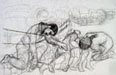
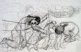

| Introduction |
| The Massacre |
| Witnesses |
| ...Rose Amer |
| ...Abu Ayyoub |
| ...Abu Azmi |
| ...Abu Butros |
| ...Abu Naser |
| ...Political Prisoner |
| ...Abu Sameeh |
| ...Abdal Tamam |
| ...Abu Thiab |
| ...Tawfiq Touby |
| ...Abu Yazen |
| ...Abu Waleed |
| Roster of Victims |
| Artist's Notes |
| Contact me |
| ="pointer-events:none;cursor:default;" href="http://www.art.net/samia">Exit |
MEMORIAL on the 50th Anniversary of the Kafr Qasem Massacre
Interview with Abu Sameeh, November 1999 in Kafr Qasem
Recorded and translated by Samia A. halabyAbu Sameeh told me that he was in the middle of the massacre and was enthusiastic to talk about it with openness and less pain than either Abul Walid and Abu Ayyoub. He said, �I was in Yafa (Jaffa) buying products for resale in my shop. I therefore had a bundle of money in my inner pocket. I arranged for the storage and transfer of the material and arrived in Petah Tikva looking for transportation to Kafr Qasem. I met up with some workers from Petah Tikva walking towards Kafr Qasem and a truck came by and stopped to pick us up. We had heard shooting and were hopeful of a safe ride. The driver wanted money and we had to bargain with him. You do not count costs when you fear loss of your life. I paid for a lot of the others who could not pay. As we neared where the soldiers were standing, we were overcome by fear as we saw bodies and other trucks.
Our truck was stopped by the border guards and an argument ensued between them. Some wanted us, the passengers, to be taken to the border; some wanted to kill us; another who had himself sold the truck to the Arab driver, wanted to lead the truck into the town. Thus, one border guard began to lead the truck into town while the others were still arguing. The passengers and I were trembling with fear and we could feel the slow bumbing of the truck as it drove over dead bodies and we heard the squash of a skull.
(At that moment Abu Sameeh acted the bumpiness of the ride with his open and shaking hands, and the squashing with vocalized sounds. Then he continued with his account.)
Just at that point Zahran�s grandfather comes along. He was then a very old man. He stopped the police to ask about his two sons. He stopped them even in the midst of their arguing. He had come out of his home knowing that death was the punishment for breaking the curfew. He feared the loss of his two sons more than he feared death itself. While he is occupied the police in this manner, the truck driver takes the opportunity to speed up and in so doing, saved us all from joining those who had been massacred before us. When we arrive at our destination we all rush out of the truck into the house and lock the door. Then we realize that we had left the truck lights on and the doors wide open and the motor running. After some consideration, someone snuck out, turned the lights and the motor off, locked the doos, and returned.
All through the night armored vehicles toured the town. We saw one at least every hour. We had a complete three day curfew. We could not leave our houses.
The dead were buried by folks from Jaljoulia who dug graves under pressure. We were told that as the Israelis found one man seemingly willing to dig, they would put him in the jeep. When they left to look for another, the first would run away. They had a lot of trouble finding enough people to dig the graves. Later, as the volunteers were digging, military vehicles with headlights on surrounded them. The men feared that they were digging their own graves. They requested that the vehicle be taken back a bit from them. They dug 30 graves and were asked to dig 30 more. At that point, they tell, that even greater fear came over them. After the graves were dug, just a few villagers [Kafr Qasemites] were taken out to identify the bodies.
Web posting: Samia A. Halaby, September 2006.
![[Art on the Net]](/images/artnet_button.gif)